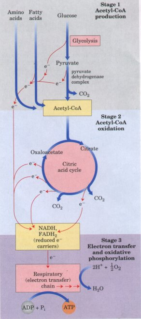
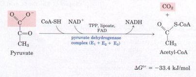
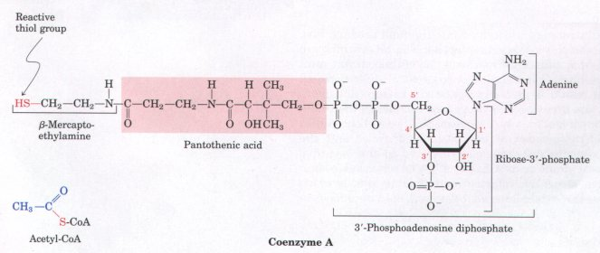
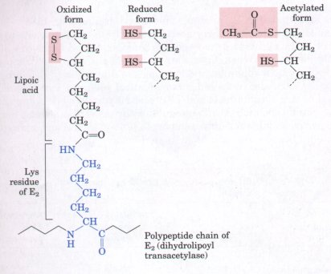
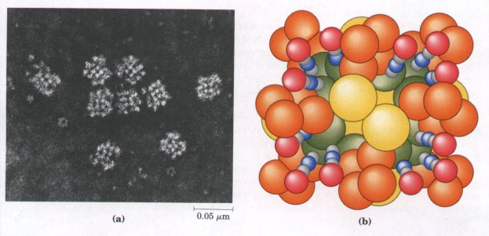
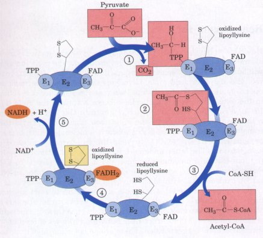

We saw in Chapter 14 how cells obtain energy (ATP) by fermentation, breaking down glucose in the absence of oxygen. However, most eukaryotic cells and many bacteria normally are aerobic and oxidize their organic fuels completely to CO2 and H2O. Under these conditions the pyruvate formed in the glycolytic breakdown of glucose is not reduced to lactate, ethanol, or some other fermentation product, as occurs under anaerobic conditions, but instead is oxidized to CO2 and H2O in the aerobic phase of catabolism, respiration. In the broader physiological or macroscopic sense, respiration refers to a multicellular organism's uptake of O2 from its environment and release of CO2, but biochemists and cell biologists use the term in a microscopic sense to refer to the molecular processes involved in O2 consumption and CO2 formation by cells. This latter process may be more precisely termed cellular respiration.
| Cellular respiration occurs in three
major stages (Fig. 15-1). In the first stage, organic
fuel molecules-glucose, fatty acids, and some amino
acids-are oxidized to yield two-carbon fragments in the
form of the acetyl group of acetyl-coenzyme A
(acetyl-CoA). In the second stage, these acetyl groups
are fed into the citric acid cycle, which enzymatically
oxidizes them to CO2. The energy released by oxidation is
conserved in the reduced electron carriers NADH and
FADH2. In the third stage of respiration, these reduced
cofactors are themselves oxidized, giving up protons (H+)
and electrons. The electrons are transferred along a
chain of electron-carrying molecules, known as the
respiratory chain, to O2, which they reduce to form H2O.
During this process of electron transfer much energy is
released and conserved in the form of ATP, in the process
called oxidative phosphorylation. Respiration is more
complex than glycolysis and is believed to have evolved
much later, after the appearance of cyanobacteria, which
added oxygen-the electron acceptor of respiration-to the
earth's atmosphere. We will discuss the third stage of cellular respiration (electron transfer and oxidative phosphorylation) in Chapter 18. In this chapter we examine the complete oxidation of pyruvate and the citric acid cycle, also called the tricarboxylic acid cycle or the Krebs cycle (after its discoverer). We consider first the cycle reactions and the enzymes that catalyze them. Because intermediates of the citric acid cycle are often used as biosynthetic precursors, some means of replenishing these intermediates is essential to the continued operation of the cycle; we discuss several such replenishing reactions. The mechanisms that regulate the flux of material through the citric acid cycle are then considered. Finally, we describe a metabolic sequence, the glyoxylate pathway, that employs some of the same enzymes and reactions that occur in the citric acid cycle to enable the net synthesis of glucose from stored triacylglycerols. |
 Figure 15-1 Catabolism of proteins, fats, and carbohydrates occurs in the three stages of cellular respiration. Stage l: Oxidation of fatty acids, glucose, and some amino acids yields acetyl-CoA. Stage 2: Oxidation of acetyl groups via the citric acid cycle includes four steps in which electrons are abstracted. Stage 3: Electrons carried by NADH and FADH2 are funneled into a chain of mitochondrial (or plasma membrane-bound, in bacteria) electron carriers-the res irator chain-ultimatel reducing O2 to H2O. This electron flow drives the synthesis of ATP, in the process of oxidative phosphorylation. |
In aerobic organisms, glucose and other sugars, fatty acids, and most of the amino acids are ultimately oxidized to CO2 and H2O via the citric acid cycle. Before they can enter the cycle, the carbon skeletons of sugars and fatty acids must be degraded to the acetyl group of acetyl-CoA, the form in which the citric acid cycle accepts most of its fuel input. Many amino acid carbons also enter the cycle this way, although several amino acids are degraded to other intermediates of the cycle. In Chapters 16 and 17, respectively, we shall see how fatty acids and amino acids enter the citric acid cycle. Here we consider how pyruvate, derived from glucose by glycolysis, is oxidized to yield acetyl-CoA and CO2 by a structured cluster of three enzymes, the pyruvate dehydrogenase complex, located in the mitochondria of eukaryotic cells and in the cytosol of prokaryotes.
A careful examination of this enzyme complex can be rewarding in several respects. The pyruvate dehydrogenase complex is a classic example, very well studied, of a multienzyme complex in which a series of chemical intermediates remain bound to the surface of the enzyme molecules as the substrate is transformed into the imal product. Five cofactors participate in this key reaction mechanism, all of which are coenzymes derived from vitamins. The regulation of this enzyme complex also illustrates how a combination of covalent modification and allosteric regulation results in precisely regulated flux through a metabolic step. Finally, the pyruvate dehydrogenase complex is the prototype for two other important enzyme complexes that we will encounter: α-ketoglutarate dehydrogenase (of the citric acid cycle) and the branched-chain α-ketoacid dehydrogenase involved in the oxidative degradation of several amino acids (Chapter 17). The remarkable similarity in the protein structure, cofactor requirements, and reaction mechanisms of these three complexes doubtless reflects a common evolutionary origin.
| The overall reaction catalyzed by the
pyruvate dehydrogenase complex is oxidative
decarboxylation, an irreversible oxidation
process in which the carboxyl group is removed from
pyruvate as a molecule of CO2 and the two remaining
carbons become the acetyl group of acetyl-CoA (Fig. 15-2).
The NADH formed in this reaction gives up a hydride ion
with its two electrons ( : H-) to the respiratory chain
(Fig. 15-1), which carries the electrons to oxygen or, in
anaerobic microorganisms, to an alternative electron
acceptor such as sulfur. This electron transfer to oxygen
ultimately generates three molecules of ATP per pair of
electrons. The irreversibility of the pyruvate dehydrogenase reaction has been proved by isotopic labeling experiments: radioactively labeled CO2 cannot be reattached to acetyl-CoA to yield pyruvate labeled in the carboxyl group. |
 Figure 15-2 The overall reaction catalyzed by the pyruvate dehydrogenase complex. The five coenzymes involved in this reaction, and the three enzymes that make up the enzyme complex, are discussed in the text. |
The combined dehydrogenation and decarboxylation of pyruvate to acetyl-CoA (Fig. 15-2) involves the sequential action of three different enzymes, as well as five different coenzymes or prosthetic groupsthiamine pyrophosphate (TPP), flavin adenine dinucleotide (FAD), coenzyme A (CoA), nicotinamide adenine dinucleotide tNAD), and lipoate. Four different vitamins required in human nutrition are vital components of this system: thiamin (in TPP), riboflavin (in FAD), niacin (in NAD), and pantothenate (in coenzyme A).
We have already described the roles of FAD and NAD as electron carriers (Chapter 13), and we have encountered TPP as the coenzyme of the enzyme that catalyzes decarboxylation of pyruvate to acetaldehyde in alcohol fermentation (see Fig. 14-9). Pantothenate, present in all living organisms, is an essential component of coenzyme A (Fig. 15-3). Coenzyme A has a reactive thiol (-SH) group that is critical to its role as an acyl carrier in a number of metabolic reactions; acyl groups become covalently linked to this thiol group, forming thioesters. Because of their relatively high free energy of hydrolysis (see Figs. 13-6, 13-7), thioesters have a high acyl group transfer potential, donating their acyl groups to a variety of acceptor molecules. The acyl group attached to coenzyme A may thus be thought of as activated for group transfer.

Figure 15-3 The structure of coenzyme A. A hydroxyl group of pantothenic acid is joined to a modified ADP moiety by a phosphate ester bond, and its carboxyl group is attached to β-mercaptoethylamine in amide linkage. The hydroxyl group at the 3' position of the ADP moiety has a phosphate group not present in ADP itsel?The -SH group of the mercaptoethylamine moiety forms a thioester with acetate in acetyl-CoA (lower left). Coenzyme A is abbreviated as CoA, and acetylcoenzyme A as acetyl-CoA; the reactive -SH group is generally shown only in chemical structures.
The fifth cofactor for the pyruvate dehydrogenase reaction, Iipoate (Fig. 15-4), has two thiol groups, both essential to its role as cofactor. In the reduced form of lipoate both sulfur atoms are present as -SH groups, but oxidation produces a disulfide (-S-S-) bond, similar to that between two Cys residues in a protein. Because of this capacity to undergo oxidation-reduction reactions, lipoate can serve both as an electron carrier and as an acyl carrier; both functions are important in the action of the pyruvate dehydrogenase complex. |
 Figure 15-4 Lipoic acid in amide linkage with the side chain of a Lys residue is the prosthetic group of dihydrolipoyl transacetylase (E2). The lipoyl group occurs in oxidized (disulfide) or reduced (dithiol) form and can act as a carrier of both hydrogen and an acetyl (or other acyl) group. |

Figure 15-5 (a) Electron micrograph of the pyruvate dehydrogenase complex isolated from E. coli, showing its subunit structure. (b) Interpretive model of the organization of the mammalian pyruvate dehydrogenase complex. The 24 E2 subunits are depicted as having an inner catalytic domain (green) with an attached flexible lipoyllysyl domain (red) and an E1/E3 binding domain (blue) joined by linker segments (gray). The complex also contains 24 dimeric E1 components (orange) and 6 dimeric E3 components (yellow). Note that the mammalian complex is larger and has more subunits than the E. coli complex.
The pyruvate dehydrogenase complex consists of multiple copies of each of the three enzymes pyruvate dehydrogenase (E1), dihydrolipoyl transacetylase (E2), and dihydrolipoyl dehydrogenase (E3) (Table 15-1). The number of copies of each subunit, and therefore the size of the complex, varies from one organism to another. The pyruvate dehydrogenase complex isolated from E. coli (Mr > 4.5 × 106) is about 45 nm in diameter, slightly larger than a ribosome, and can be visualized with the electron microscope (Fig. 15-5a). The "core" of the cluster, to which the other enzymes are attached, is dihydrolipoyl transacetylase (E2). In the complex from E. coli, 24 copies of this polypeptide chain, each containing three molecules of covalently bound lipoate, constitute this core. In the complex from mammals, there are 60 copies of E2 and six of a related protein, protein X, which also contains covalently bound lipoate. The attachment of lipoate to the ends of Lys side chains in E2 produces lipoyllysyl groups (Fig. 15-4)-long, flexible arms that can carry acetyl groups from one active site to another in the pyruvate dehydrogenase complex. Bound to the core of E2 molecules are 12 copies of pyruvate dehydrogenase (E1), each composed of two identical subunits, and six copies of dihydrolipoyl dehydrogenase (E3), each also composed of two identical subunits. Pyruvate dehydrogenase (E1) contains bound TPP, and dihydrolipoyl dehydrogenase (E3) contains bound FAD. Tvvo regulatory proteins that are also part of the pyruvate dehydrogenase complex (a protein kinase and a phosphoprotein phosphatase) will be discussed below.
| Table 15-1 Subunit composition of the E. coli pyruvate dehydrogenase complex | |||
Enzyme |
Coenzyme(s) |
Molecular weight of subunit |
Number of subunits per complex |
| Pyruvate dehydrogenase (E1) | TPP | 96,000 |
24 |
| Dihydrolipoyl transacetylase (E2) | Lipoate, CoA | 65,000-70,000 |
24 |
| Dihydrolipoyl dehydrogenase (E3) | FAD, NAD | 56,000 |
12 |
Source: Modified from Eley, M.H., Namihira, G., Hamilton, L.. Munk, P., & Reed, L.J. (1972) a-Ketoacid dehydrogenases. XVIII: subunit composition of the E. coli pyruvate dehydrogenase complex. Arch. Biochem. Biophys. 152, 655-669.
| Figure 15-6 shows schematically how the
pyruvate dehydrogenase complex carries out the five
consecutive reactions in the decarboxylation and
dehydrogenation of pyruvate. Step 1 is essentially
identical to the reaction catalyzed by pyruvate
decarboxylase (see Fig. 14-9c); C-1 of pyruvate is
released as CO2, and C-2, which in pyruvate has the
oxidation state of an aldehyde, is attached to TPP as a
hydroxyethyl group. In step 2 this group is oxidized to a
carboxylic acid (acetate). The two electrons removed in the oxidation reaction reduce the -S-S- of a lipoyl group on E2 to two thiol (-SH) groups. The acetate produced in this oxidation-reduction reaction is first esterified to one of the lipoyl -SH groups, then transesterified to CoA to form acetylCoA (step 3). Thus the energy of oxidation drives the formation of a high-energy thioester of acetate. The remainder of the reactions catalyzed by the pyruvate dehydrogenase complex (steps 4 and 5) are electron transfers necessary to regenerate the disulfide form of the lipoyl group of E2 to prepare the enzyme complex for another round of oxidation. The electrons removed from the hydroxyethyl group derived from pyruvate eventually appear in NADH after passing through FAD. Central to the process are the swinging lipoyllysyl arms of E2, which pass the two electrons and the acetyl group derived from pyruvate from El to E3. All these enzymes and coenzymes are clustered, allowing the intermediates to react quickly without ever diffusing away from the surface of the enzyme complex. The five-reaction sequence shown in Figure 15-6 is another example of substrate channeling, as described in Chapter 14 (see Fig. 14-8). |
 Figure 15-6 Steps in the oxidative decarboxylation of pyruvate to acetyl-CoA by the pyruvate dehydrogenase complex The fate of pyruvate is traced in pink. In step 1 pyruvate reacts with the bound thiamine pyrophosphate (TPP) of pyruvate dehydrogenase (El), undergoing decarboxylation to form the hydroxyethyl derivative. Pyruvate dehydrogenase also carries out step 2 , the transfer of two electrons and the acetyl group from TPP to the oxidized form of the lipoyllysyl group of the core enzyme, dihydrolipoyl transacetylase (E2), to form the acetyl thioester of the reduced lipoyl group. Step 3 is a transesterification in which the -SH group of CoA replaces the -SH group of E2 to yield acetylCoA and the fully reduced (dithiol) form of the lipoyl group. In step 4 dihydrolipoyl dehydrogenase (E3) promotes transfer of two hydrogen atoms from the reduced lipoyl groups of E2 to the FAD prosthetic group of E3, restoring the oxidized form of the lipoyllysyl group of E2 (shaded yellow). In step 5 the reduced FADHZ group on E3 transfers a hydride ion to NAD+, forming NADH. The enzyme complex is now ready for another catalytic cycle. The structures of TPP and its hydroxyethyl derivative are shown in Fig. 14-9. E1, pyruvate dehydrogenase; E2, dihydrolipoyl transacetylase; E3, dihydrolipoyl dehydrogenase. |
As one might predict, mutations in the genes for pyruvate dehydrogenase subunits, or thiamin deficiency in the diet, have severe consequences. Thiamin-deficient animals are unable to oxidize pyruvate normally, which is of particular importance in the brain; this organ usually obtains all its energy from the aerobic oxidation of glucose, and pyruvate oxidation is therefore vital. Beriberi, a disease that results from dietary deficiency of thiamin, is characterized by loss of neural function. This disease occurs primarily in populations that depend on white (polished) rice for most of their food; white rice lacks the hulls in which most of the thiamin of rice is found. People who habitually consume large amounts of alcohol can also develop thiamin deficiency; much of their dietary intake is in the form of the "empty (vitamin-free) calories" of distilled spirits. An elevated level of pyruvate in the blood is often an indicator of defects in pyruvate oxidation due to one of these causes .